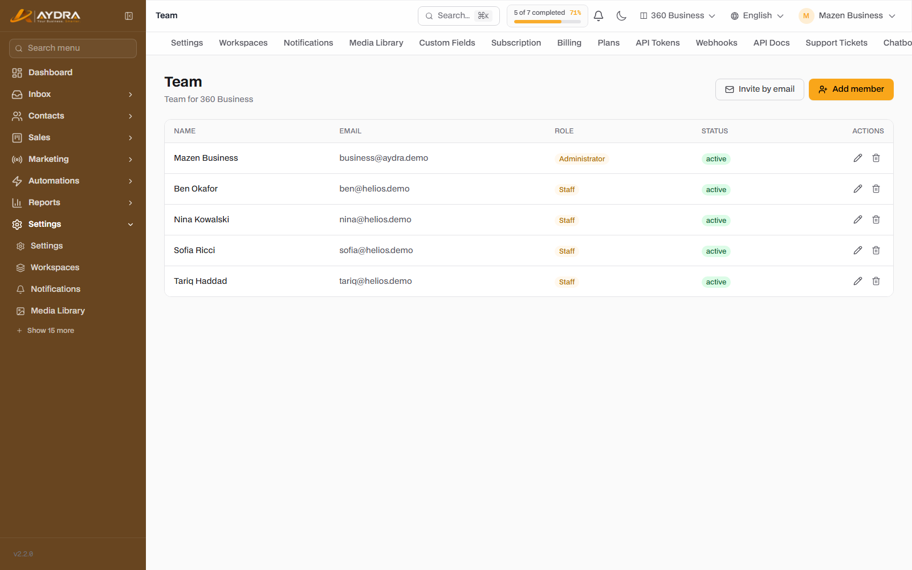
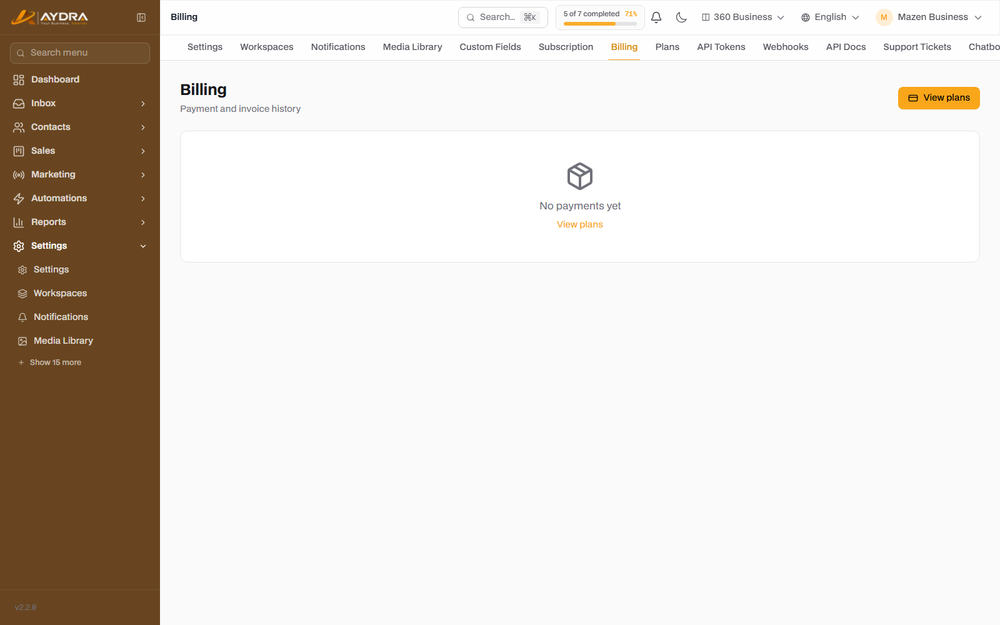
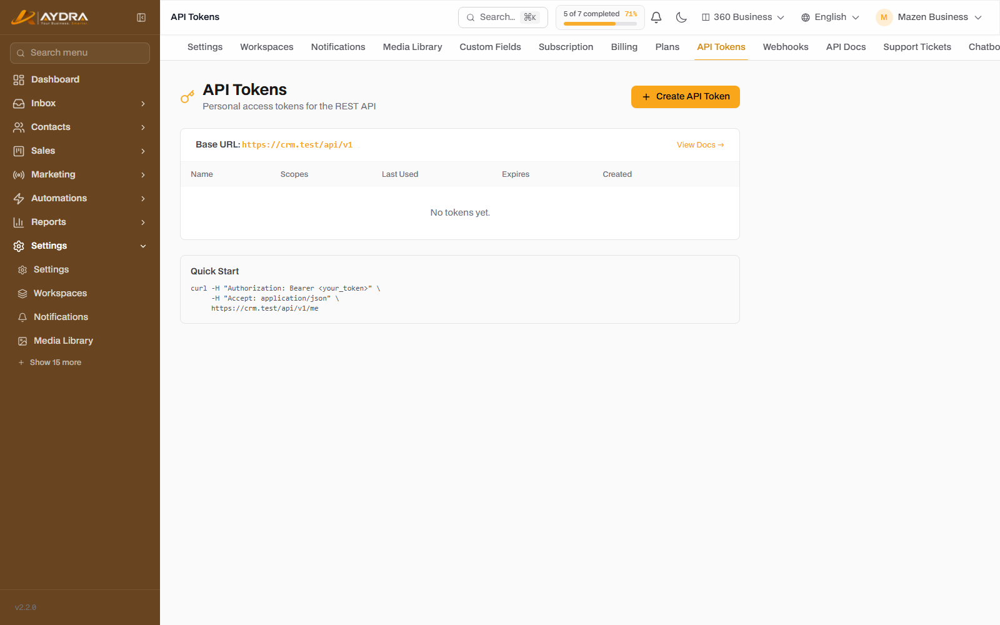
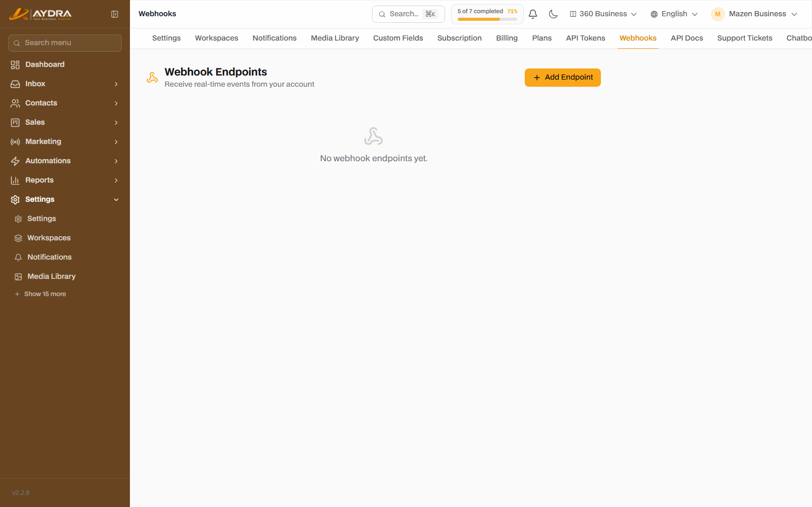
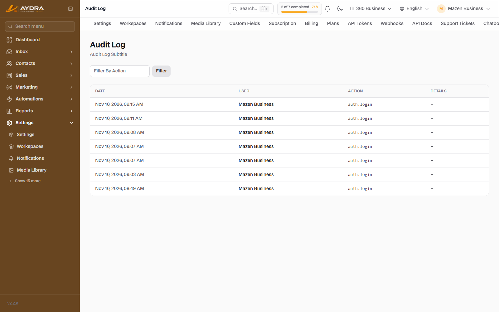

Account Admin & Troubleshooting
This guide is for the administrator: who can access the system and what they see, how billing is managed, how to secure the account, and where to find a fix when something stops working.
Most of the settings in this guide only appear for the Administrator role. If you are a Staff or Viewer and cannot find a screen, this is the reason — ask your account administrator.
1. Team and invitations

From Settings → Team.
Invite a new member
- Click Invite by email.
- Enter the member's email and choose a role (Staff by default).
- Send the invitation. It appears under Pending invitations until the member accepts it.
- You can cancel the invitation before it is accepted.
The three roles
| Role | Permissions | Best for |
|---|---|---|
| Administrator | Everything: team, billing, integrations, settings, logs, deletion | Account owner or operations manager |
| Staff | Day-to-day work: conversations, contacts, leads, campaigns | Sales and support team |
| Viewer | Read and reports only | Management or oversight without editing |
The number of users is limited by your plan. When you reach the limit, the invite button is disabled and an upgrade suggestion appears — existing members keep working unaffected.
Before deleting a member, reassign their tasks and unresolved conversations to a colleague. Deleting the member does not delete their historical data, but it cuts off their access immediately.
2. Subscription and billing
Subscription page

From Settings → Subscription you can see: the current plan, renewal date, subscription status, and limits. From the same page:
- Change plan: an upgrade is immediate, while a downgrade usually starts from the next cycle.
- Cancel subscription: the account keeps working until the end of the paid period, then switches to limited mode.
- Discount coupon: enter the code before paying, then click verify — the discount appears before you confirm.
Payments and invoices log
From Settings → Billing. A table of all transactions: date, amount, currency, gateway, and status.
- Click Invoice next to any successful transaction to download it.
- Transactions with a Pending status may complete after a few minutes, depending on the payment gateway.
- If the payment fails, try another gateway or check with your bank — do not retry more than twice in a row.
Prices and currencies
Prices are shown according to the account/region currency. Displayed amounts do not include tax (VAT), which is added at checkout based on your country. An annual subscription = 10 months' cost (two months free).
3. Profile and security
Profile
From Profile: name, email, photo, language, and time zone. Changing the email requires confirmation.
Two-factor authentication (2FA)
- Open Profile → Two-Factor.
- Scan the QR code with an authenticator app (Google Authenticator / Authy / 1Password).
- Enter the code to confirm activation.
- Save the recovery codes in a safe place — without them, signing in is difficult if you lose your phone.
Active sessions
From Profile → Sessions you can see all signed-in devices. Use Sign out of all sessions if you suspect unauthorized access.
Password
Change it from your profile. Use a long, unique password, and enable 2FA — these are the two most important steps to protect the account.
4. API and Webhooks
API keys (API Tokens)

From Settings → API keys (requires the API feature in your plan).
- Click Create key and enter a name that reflects its use (for example, "Website integration").
- Choose the permissions (Scopes): read/write contacts, campaigns, messages, conversations, Webhooks, AI, automation, social.
- Optionally set an expiry date.
- Copy the key immediately — it will not be shown again.
Use it in requests as Authorization: Bearer <token>. See Settings → API documentation for examples and routes.
Do not put the key in frontend code or a Git repository. Create a separate key for each integration, and revoke it immediately if it leaks or is no longer used.
Outgoing Webhooks

From Settings → Webhooks. They notify your systems about platform events.
- Add an Endpoint (HTTPS) and choose the events.
- Save the Secret to verify the signature.
- Send a test and make sure you receive
200. - Check the delivery log on any failure, and retry.
You can rotate the Secret from the same page if you suspect it has leaked.
5. Media and storage
From Settings → Media library. Upload the images and files used in campaigns, templates, and posts.
- The maximum file size depends on your plan and storage capacity.
- Large images are compressed automatically in some flows — check the preview after uploading.
- Deleting a file that is used in a campaign may break the campaign — verify before deleting.
When storage is full, only new uploads stop; existing files keep working. Clean up unused files or upgrade your plan.
6. Notifications
From Settings → Notifications:
- Choose what reaches you: new conversation, assignment, due task, campaign failure, automation failure, invoice...
- Choose the channel: in-app, email, or Web Push.
- Web Push requires permission from the browser — if you declined it, re-enable it from the site settings in your browser.
- Alert sounds are configured from the inbox.
7. Audit Log

From Settings → Audit log (administrators only). It shows who did what and when: sign-in, settings change, deletion, invitation, plan change... etc.
- Filter by action or user.
- Export the log as CSV from the export button.
- Use it when investigating an unexpected change or a security incident.
8. Privacy and GDPR
From Settings → Privacy & GDPR (administrators only):
Data Processing Agreement (DPA)
Download a DPA copy pre-filled with your organization's details — for the vendor and the customer.
Right to erasure (Erasure)
- Create an erasure request for a specific person's email.
- The request goes through a grace period (30 days by default) before execution.
- The request can be cancelled during that period.
- On execution: conversations and contacts are deleted, and leads are anonymised (Anonymise) to preserve financial records.
Retention period
Set the number of days to keep generated export archives. A value of 0 = unlimited retention. Delete old archives automatically to save space.
9. Export workspace data
From Settings → Data export: request a complete copy of your workspace data. The file is generated in the background and you receive a download link by email when it finishes. The duration depends on the size of the data.
10. Support
From Support in the sidebar:
- Click New ticket.
- Choose the topic (billing, integration, technical error, other).
- Write a clear description and attach screenshots if possible.
- Follow the replies from the same screen.
For the fastest resolution, include: the screen name, the time of the problem, the email/phone used, and the error message text. Do not send API keys or passwords.
11. Troubleshooting — quick guide
I cannot sign in
- Make sure the email and password are correct (try forgot password).
- If you enabled 2FA and lost your phone, use a recovery code.
- If the account is suspended or the trial has ended, check with the administrator.
I cannot see a screen in the menu
- Role: Viewer/Staff see less than an Administrator.
- Plan: some features are not included.
- Workspace: you are in a different workspace — switch using the workspace switcher.
The "limit reached" message
The limit blocks new creation only. Existing data keeps working and is not deleted. Upgrade your plan, wait for the month to renew, or delete unused items.
Channels are not sending
- WhatsApp: expired token, unapproved template, or outside the 24-hour window.
- SMS: zero balance, unapproved Sender ID, or wrong number format.
- Email: wrong SMTP or SPF/DKIM not configured.
- See the integrations guide.
AI is not working
- No key is enabled, or the key has expired / has zero balance.
- You have exceeded the monthly token limit.
- Knowledge bases need an Embeddings provider (OpenAI/Gemini).
The website or domain does not open
- Check the DNS settings (CNAME/A) and wait up to 24 hours for propagation.
- Verify the SSL certificate.
- Check with the platform administrator — domain setup is done from the admin panel.
The campaign reached fewer recipients than expected
- Invalid or blocked numbers on WhatsApp.
- Recipients who are on the "unsubscribed" list.
- The monthly channel limit was exceeded during sending.
- See the campaign report for a breakdown of the failure reasons.
Automation is not working
- It is not enabled, or the trigger is not connected to the first step.
- A step is failing because of a disconnected channel or an unapproved template.
- Check the "run log" to find the step and the reason.
12. Frequently asked questions
| Question | Answer |
|---|---|
| Is my data shared with other customers? | No. Every workspace is fully isolated at the database level. |
| What happens if I downgrade my plan and exceed the limits? | Nothing is deleted. New additions are blocked and an upgrade prompt appears. |
| Can a deleted item be recovered? | Deletion is usually permanent. Export a copy periodically, or use the data export. |
| Can ownership be transferred to someone else? | Yes, from team management — appoint another Administrator and then change your own roles. |
| Does the platform work without my keys? | No. Channels and AI need your keys (BYOK) — this is intentional, for the security of your data and your costs. |
| How do I track my usage? | From the reports (AI, conversations, campaigns) and the dashboard. |
| Can I export everything? | Yes — CSV from the reports, and a full copy from the data export. |
13. Monthly security checklist
- Review the team list and remove anyone who no longer needs access.
- Rotate/revoke unused API keys.
- Review the active sessions.
- Make sure 2FA is enabled for every Administrator.
- Review the audit log for unexpected changes.
- Make sure the channel keys (WhatsApp/SMS/SMTP/AI) are production keys and have not expired.
- Review token and message usage against your plan limits.
You have reached the end of the guides. If you missed a step, go back to the guides index or use the search at the top.